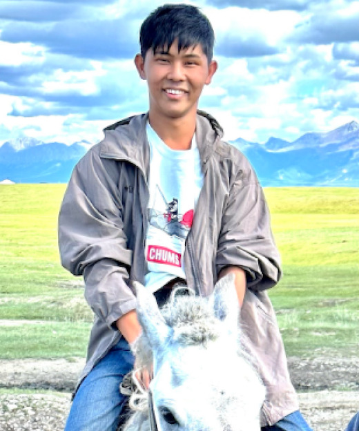
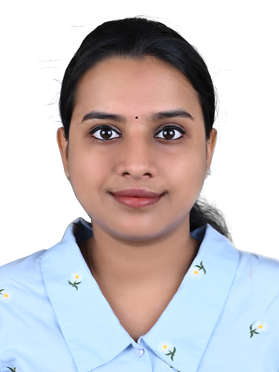

Exploring planetary surface processes through geology, simulation, and exploration
About
The Astrogeology and Surface Simulation Laboratory (ASSL), led by Dr. Trishit Ruj at the Institute for Planetary Materials, Okayama University, focuses on the exploration and analysis of planetary surfaces, particularly Mars, to unravel their geological history, environmental conditions, and potential habitability.
At ASSL, we employ interdisciplinary methods, integrating planetary geology, remote sensing, geomorphology, and experimental simulations. Our laboratory is equipped with custom-built Martian environmental simulation chambers, enabling precise replication of planetary surface processes.
We are dedicated to advancing planetary science by bridging laboratory experiments, field analog research, and computational modeling. Our international collaborations span Japan, India, Europe, and beyond.
Research
Current Research
We investigate Martian periglacial processes, present-day brine stability, delta morphodynamics, lunar tectonics, and machine learning for terrain classification.
Past Research
We have explored cryosalt-driven flows, Amazonian glaciation, deltaic layering, and impact-induced upwelling on the Moon and Mars.
Facilities Available
Martian Environmental Simulation Chamber
Hyperspectral Imaging Suite
Planetary Surface Modeling Tools
Remote Sensing Workstations
Team
Trishit Ruj
Principal Investigator
Associate Professor, IPM, Okayama University
Ren Kito
M.Sc Student (M2)
Research Topic: Delta Morphology and reconstructing Martian global regression

Takaki Sako
M.Sc Student (M2)
Research Topic: Polygon morphology and identification of near-surface ice
Takumu Chijiiwa
M.Sc Student (M2)
Research Topic: Present-day water activity on Martian high-latitudes

Hiral PB
M.Sc Student (M2)
Research Topic: Water-ice distribution on Martian subsurface
Project Gallery
Simulated Martian Delta
Dune Analog Site
Simulation Chamber
News & Updates
June 2025: Geology paper accepted on crater-filled glacial forms.